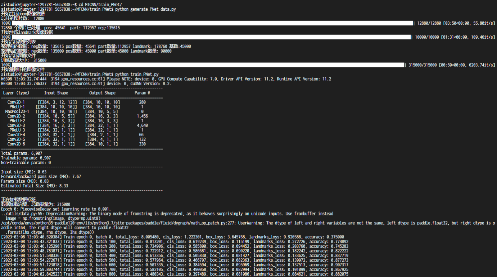
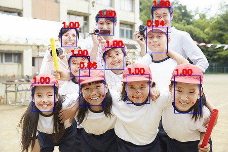
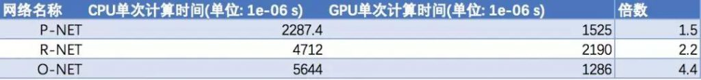

我目前复现了 MTCNN 人脸关键点检测的代码，更改了部分参数和训练集，在训练集上的准确率约 0.96。
训练截图

预测结果

当前算法虽然准确率还行，但是推断速度很慢。一方面模型推断时需要先对图片做金字塔变换，生成多张大小不同的图像送入网络，另一方面算法中有很多 CPU 密集型运算，CPU 和 GPU 运算时间差距不大，每次启动显卡还要额外消耗时间。

优化方向主要是提高模型推断速度，可以优化一些生成人脸候选框的代码，降低迭代次数。